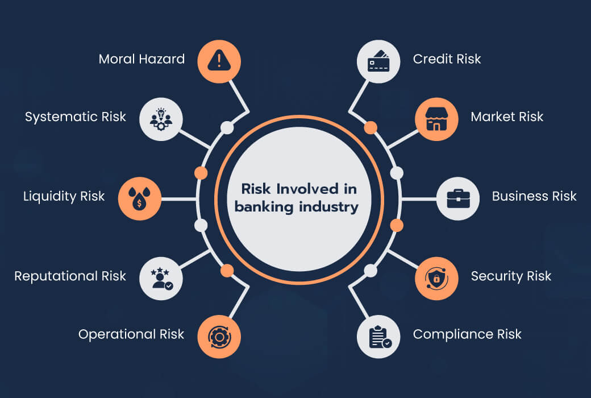
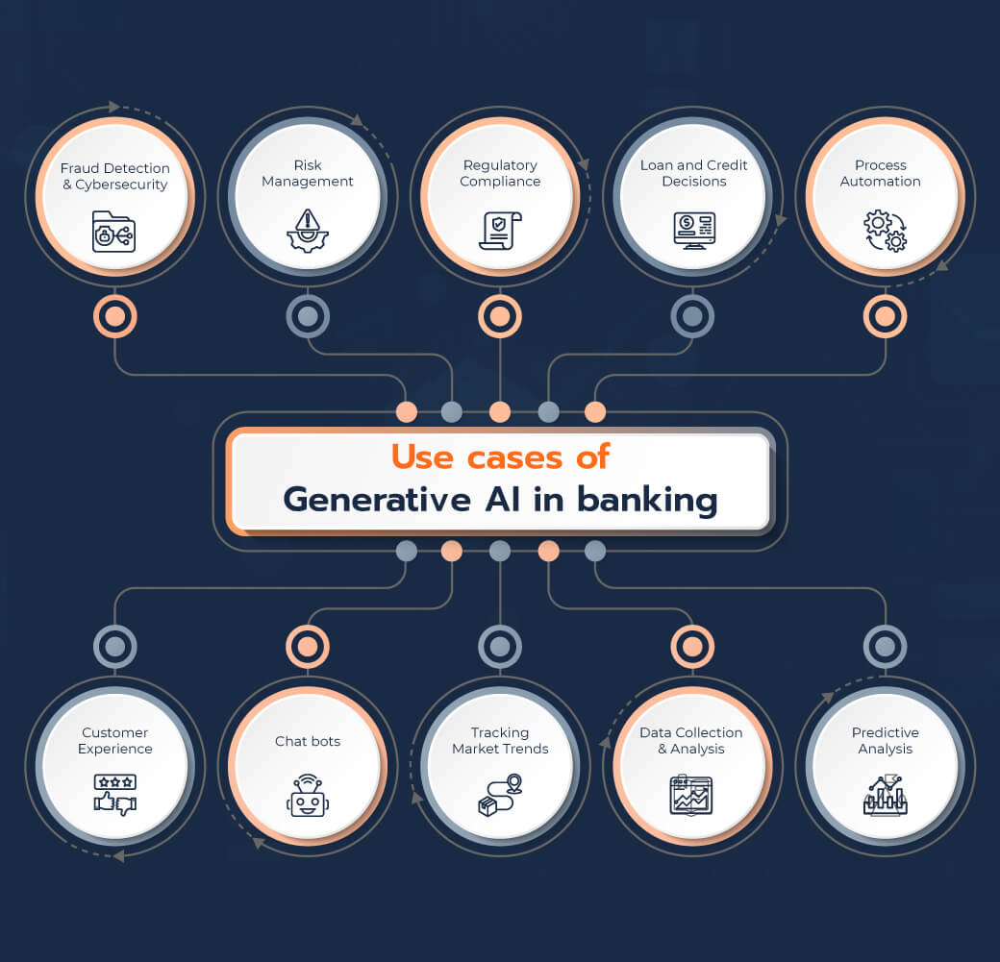

With an estimation of 2.8 billion people exploring mobile banking systems, with the count hyping over, the risk of data breaching is also getting maximum. Hyper Automation and Artificial intelligence are very predominant technologies that have been very adaptive in the Financial operations. New technologies coming forth to establish their expertise in the field, the AI assures them to carefully handle data and suggest the best solutions for decision-making, problem-solving, reducing operational cost, financial processing, and more. Autonomous finances help the financial services industry by leveraging Generative AI Technologies. This encourages Banks to adopt AI in large verticals. Let us dive into the major and trending Use cases of Generative AI in the Banking sector.
What Are Major Risks In The Banking Sector?
Compliance and Regulatory Risk
Banks are operated in a regulated environment when they don't sync in with laws, regulations, compliance, and industry standards resulting in financial penalties, reputational damage, and legal action. Also any new change in regulations or when introducing new compliance requirements risk the bank's operations.
Credit Risk
Economic downturns, industry-specific challenges, or individual borrower defaults can contribute to credit risk where the borrowers and the counterparties lead to loose loans, investments, and other credit exposures.
Cybersecurity Risk
With increasing technology reliance and digital infrastructure, cyber threats are becoming very common in banks. Hacking, data breaches, phishing attacks, or ransomware are common that result in financial losses, operational disruptions, and theft of sensitive customer information all of that reflects in a bank's reputation.
Geopolitical and Macroeconomic Risk
Trade wars, political instability, regional conflicts, and other geopolitical events also tend to affect Banks and risk them. Micro economic circumstances like economic downturns, inflation, or exchange rate fluctuations, impact banks' financial performance, and stability.
Liquidity Risk
When banks suffer from insufficient liquidity to meet their financial obligations lead to difficulties in funding operations, fulfilling withdrawal requests, or settling transactions. Sudden factors like deposit withdrawals, and illiquid markets, contribute to liquidity risk detaining market confidence.
Market Risk
The fluctuations in interest rates, foreign exchange rates, equity prices, and commodity prices expose Banks to market risks. These changes have a demanding effect on the value of trading portfolios, investment holdings, and derivatives.
Operational Risk
Inadequate or failed internal processes, systems, or human errors increase the risk of losses that contribute to cybersecurity threats, technology failures, data breaches, or fraudulent activities in business operations.
Reputational Risk
It is crucial to maintain the bank's reputation, to withhold customer trust, attract new business, or pull potential investors is not an easy thing. Negative public opinions, adverse media coverage, or poor customer experiences when aligned cause reputational risk which directly impacts customer retention, business relationships, and overall profitability.

Technological Inputs Help Rectify The Operations.
The banking industry is continuously monitoring and managing risks through risk management practices, internal controls, and compliance measures. However, the nature and severity of these risks evolve over time, demanding banks to stay vigilant and mitigate potential threats with new-gen technologies.
Artificial intelligence is copping the best in almost every sector, helping businesses to redefine their Capabilities and ensure to seal the threats. Financial services are already in full swing to adopt Generative AI models for certain tasks. There are multiple use cases where artificial intelligence in banking is utilized.
Top companies and financial institutions employ Open AIs that are powered with Chatbots supporting in terms of Financial advice, decision-making, risk management, and in many more cases. With the data, they process the best for the company and its growth.
There are updates with sentiment analysis, news classifications, and other personalized financial tasks that contribute to the betterment of customer management and withholding their interest without any drop.

Trending Use cases Of Generative AI In Banking
1. Automate Process
AI and Robotic process automation (RPA) is used in automating repetitive and rule-based tasks in banking operations, like data entry, document processing, and account reconciliation. Generative AI in Banking improves operational efficiency, reduces human errors, frees up resources, and eases more complex and value-added tasks.
2. Compliance and Risk Management
AI technologies in banking help in monitoring and managing risks. They analyze vast quantities of data and identify potential compliance breaches. Machine learning technologies assist in terms of anti-money laundering (AML) and know-your-customer (KYC) processes, flag suspicious activities, ensure regulatory compliance, etc.
3. Credit Scoring
AI in the banking sector at the credit scoring processes it takes up analyzing borrower data, credit histories, financial statements, and all other relevant information. The ML models assess creditworthiness and determine risk profiles, therefore, making effective lending decisions, streamline loans, and Reducing repayment risks.
4. Detect Fraud and Preventing
The AI algorithms analyze large volumes of transactions and detect patterns. That helps in indicating fraudulent activity also. Through Machine learning, it's easy to trace and track suspicious transactions, and fraud cases, and eventually we could trigger alerts for further investigation. Thereby artificial intelligence in banking help them fight financial fraud.
5. Natural Language Processing (NLP) for Data Analysis
NLP enables banks to extract insights from unstructured data sources. It includes customer feedback, social media responses, market news, and others. By analyzing these text data, sentiment analysis, and customer sentiment, it's easy to trace valuable insights from the banks effectively, and contribute ideation into product development, market research, and customer sentiment analysis along with other attributes for the future.
6. Personalized Customer Experiences
Utilizing AI in Banking sectors enables financial institutions to deliver personalized services and recommendations to customers. They analyze customer data, transaction history, and behavior patterns. Generative AI algorithms offer tailored product suggestions, targeted marketing campaigns, and personalized financial advice, enhancing customer satisfaction and engagement.
7. Robo-advisory Services
AI-powered robo-advisors provide automated investment advice and portfolio management services to customers. They consider individual profiles and analyze risk, investment goals, and market conditions. They offer personalized investment recommendations, rebalance portfolios, and provide ongoing monitoring.
8. Underwriting
AI in banking use cases also includes the process of underwriting. Implying Machine learning techniques we could assess creditworthiness, make accurate lending decisions, streamline loan approvals, and reduce credit risk.
9. Virtual Assistants like Chatbots
Banks use Generative AI-powered chatbots and virtual assistants to provide customer support. They answer frequently asked questions, assist with account inquiries, and perform basic transactions. These AI systems use NLP and machine learning to understand and respond to customer queries effectively.
Making Effective Use Of Generative AI in Banking Build Better Structures
Generative AI are command-oriented and they are tuned to provide requested requests. Making the optimum use of technology in Banking, the sector can be well structured and give realistic solutions to individuals and institutions in terms of financial assistance. These Use cases of Generative AI in banking are wide and vast when in-tuned perfectly. Sparkout Tech can help you assist and integrate these effective AI and new-gen technology into your operational systems and ease solution-driven needs.
CO-Founder
Yokesh Sankar, Co-Founder and Chief Operating Officer of Sparkout Tech Solutions, leverages his expertise to drive innovation and operational excellence in the software industry. Passionate about empowering individuals with essential skills, he uses technology to streamline business processes and enhance efficiency. He advocates for AI and blockchain adoption, helping businesses integrate these technologies seamlessly into their operations. Staying ahead of AI trends, Yokesh explores industry applications and shares insights to foster growth and knowledge in the tech sector.